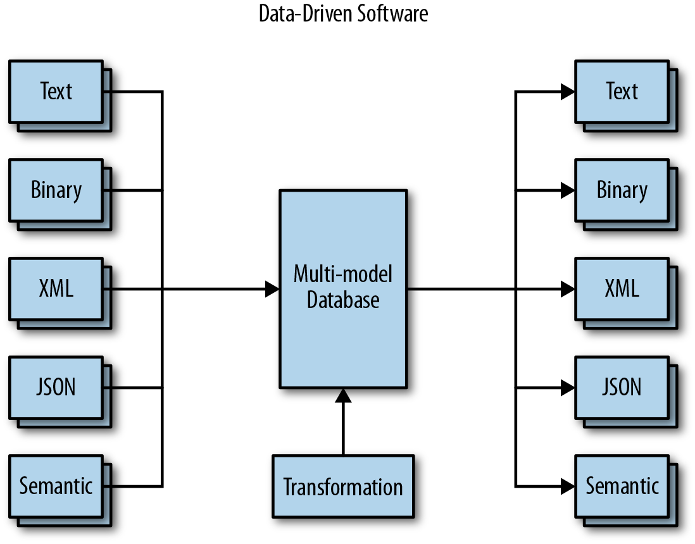

Data-driven development on tarkvara arendusprotsess, kus kasutatakse andmeid otsuste tegemiseks.
Need andmed võivad pärineda erinevat tüüpi allikatest, kuid andmepõhise tarkvaratehnika
põhiidee on tagada, et mis tahes projekteerimis- ja arendusotsuseid toetavad andmed.
Need andmed on tavaliselt kindlate mõõdikute kujul, nagu võtmetulemusnäitajad või
eesmärgi- ja võtmetulemused.
Need objektiivsed ja täpselt määratletud andmepunktid annavad arendajatele ülevaate nende pika- ja
lühiajalistest eesmärkidest, nende protsesside tõhususest ja võimest pakkuda äriväärtust.
Selle teabe põhjal näevad meeskonnad selgelt, kuidas nende töö aitab kaasa
ärieesmärkide saavutamisele ja milliseid parandusi saab teha.

| Head | Halvad |
|---|---|
| Parandab tarkvara kvaliteeti ja jõudlust | Nõuab andmete kogumise ja analüüsi oskusi |
| Viib tarkvara vastavusse kliendi vajadustega | Vajab alustamiseks andmeallikaid ja tööriistu |
| Tõstab tarkvara konkurentsivõimet ja innovatsiooni | Vajab andmeturbe- ja privaatsusmeetmeid |
| Optimeerib arendusprotsessi ja ressursse | Toetub andmehaldus- ja eetikastandarditele |
| Mõõdab tarkvara tulemusi, mõju ja väärtust | Nõuab andmepõhist kultuuri ja mõtteviisi |